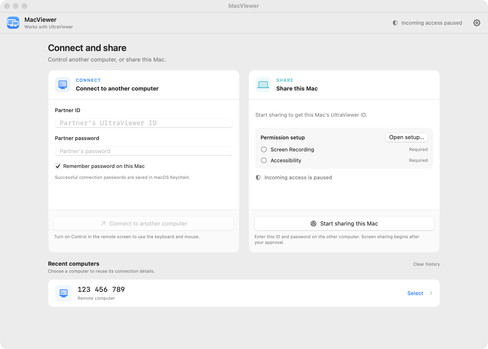

Điều khiển máy Windows từ máy Mac hoặc máy Linux của bạn. Control a Windows machine from your Mac or Linux machine.
Client UltraViewer mã nguồn mở · Hỗ trợ macOS 13 Ventura trở lên và Linux · Miễn phí Open-source UltraViewer client · Supports macOS 13 Ventura and later, and Linux · Free
Tải bản mới nhấtDownload the latest release Xem mã nguồnView sourceMọi bản dựng đều ở trang Releases và được kiểm chứng bằng mã SHA-256 công bố kèm theo.
Every build lives on the Releases page and is verified against its published SHA-256 checksums.
MacViewer-Ventura-…-macOS.dmg
Cho macOS 13 Ventura trở lên, Intel và Apple Silicon. Kiểm chứng bằng fileFor macOS 13 Ventura and later, Intel and Apple Silicon. Verify with SHA256SUMS-macOS.txt.
MacViewer-Ventura-…-Linux.tar.gz · …-Linux-amd64.deb
Cho Linux x86-64, khả năng kết nối tương đương bản Mac. Mỗi file kèm một fileFor Linux x86-64, with the same connection capabilities as the Mac build. Each file carries a .sha256 để đối chiếu.sidecar for verification.
UltraViewer vốn chỉ có bản Windows. MacViewer Ventura mang khả năng đó lên máy Mac và Linux: nhập ID và mật khẩu của máy đang chạy UltraViewer là thấy màn hình và điều khiển được ngay — và ngược lại, máy khác cũng kết nối vào máy của bạn được khi bạn cho phép.
UltraViewer ships for Windows only. MacViewer Ventura brings it to Mac and Linux: enter the ID and password of a machine running UltraViewer and you can view and control it right away — and the other way round, others can connect to your machine when you allow it.
Chuột, bàn phím, nhiều màn hình; chất lượng hình ưu tiên nét theo mặc định.Mouse, keyboard, multiple monitors; prefer-quality image by default.
TLS có ghim chứng thư và chứng thư gốc nhúng sẵn cho Ventura; mật khẩu đối tác lưu trong Keychain; không thu thập dữ liệu.Pinned-certificate TLS with a bundled root for Ventura; partner passwords in Keychain; no data collection.
Trò chuyện và đồng bộ văn bản sao chép hai chiều trong phiên; chụp màn hình, quay video phiên, nghe âm thanh máy kia.In-session chat and two-way text clipboard sync; screenshots, session recording, remote audio.
Bản mới được đối chiếu SHA-256 rồi cài đè tại chỗ và tự mở lại — không cảnh báo Gatekeeper với bản cài qua app.New versions are SHA-256-verified, installed in place and relaunched — no Gatekeeper prompt for in-app updates.
Tự phát hiện đường truyền chết và tự kết nối lại; độ trễ hình được chặn cứng để phiên dài vẫn mượt.Dead paths are detected and reconnected automatically; picture latency is hard-bounded so long sessions stay smooth.
Tuỳ chọn, tắt theo mặc định: tự duyệt khi bằng chứng mật khẩu khớp, mở cùng lúc đăng nhập, chống ngủ khi chia sẻ.Optional, off by default: auto-approve on password proof, launch at login, prevent sleep while sharing.


| macOS | 13 Ventura trở lên, chip Intel hoặc Apple Silicon (bản cũ hơn không chạy được)13 Ventura or later, Intel or Apple Silicon chip (older versions cannot run it) |
|---|---|
| Linux | x86-64, bản .tar.gz hoặc gói .debx86-64, the .tar.gz build or the .deb package |
| Quyền (máy host)Permissions (host) | Ghi màn hình và Trợ năng, cấp khi app yêu cầuScreen Recording and Accessibility, granted when the app asks |
| MạngNetwork | Truy cập được relay của UltraViewer, hoặc hai máy cùng LANReachable UltraViewer relay, or both machines on the same LAN |
Lần cài đầu tiên cần mở app bằng chuột phải một lần; các lần cập nhật sau diễn ra ngay trong app.
The first install needs one right-click open; later updates happen inside the app.
Tải file MacViewer-Ventura-…-macOS.dmg ở trang Releases và kéo MacViewer.app vào thư mục Applications.Download the MacViewer-Ventura-…-macOS.dmg from Releases and drag MacViewer.app into Applications.
Mở lần đầu: chuột phải → Open → Open. (Hoặc chạy lệnh xattr -dr com.apple.quarantine /Applications/MacViewer.app)First launch: right-click → Open → Open. (Or run xattr -dr com.apple.quarantine /Applications/MacViewer.app)
Nhập ID + mật khẩu của máy đích và kết nối. Nếu để máy khác nối vào, cấp quyền Ghi màn hình và Trợ năng theo hướng dẫn trong app.Enter the target machine's ID + password and connect. To let others connect to you, grant Screen Recording and Accessibility as the app prompts.
Dự án nhỏ, không có đội kiểm thử riêng — báo cáo của bạn rất có giá trị. Gặp lỗi, hãy mở một issue theo mẫu có sẵn: chỉ cần cho biết phiên bản, triệu chứng, và kết nối bao lâu thì gặp. Muốn thử bài bản hơn — phép thử để yên 20–30 phút, phép thử phiên dài, phép thử nối lại — xem hướng dẫn báo lỗi & kiểm thử.
This is a small project with no QA team — your reports matter. If something breaks, open an issue using the template: just state your version, the symptom, and how long you were connected. For structured testing — the idle test, the long-session test, the reconnect test — see the reporting & testing guide.